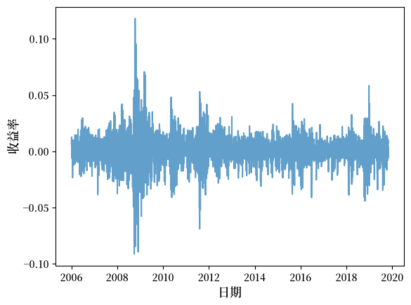
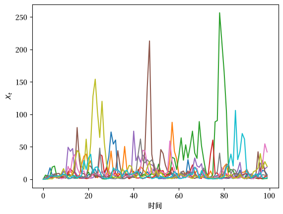
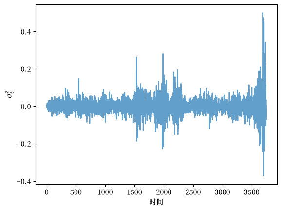
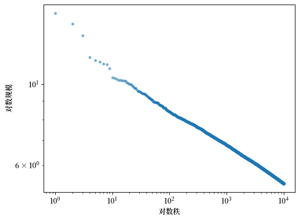

45. Kesten过程与企业动态#
GPU
本讲座是在配有GPU的机器上构建的——不过没有GPU也可以运行。
Google Colab 提供带GPU的免费套餐，使用方法如下：
点击右上角的”播放”图标
选择 Colab
将运行时环境设置为包含GPU
除了 Anaconda 中包含的内容外，本讲座还需要以下库：
!pip install --upgrade quantecon yfinance jax
45.1. 概述#
之前 我们学习了线性标量值随机过程（AR(1)模型）。
现在，我们将进一步推广这些线性模型，允许乘法系数具有随机性。
这些过程被称为Kesten过程，以德裔美国数学家Harry Kesten（1931-2019）的名字命名。
虽然Kesten过程的数学形式看起来很简单，但它们在经济学中非常重要，主要有两个原因：
很多关键的经济过程可以用Kesten过程来描述。
Kesten过程能够产生复杂的动态行为，尤其是在某些条件下，它们可以生成带有”重尾”特征的横截面分布。
我们接下来会讨论这些问题。
现在我们从一些导入开始：
import matplotlib.pyplot as plt
import matplotlib as mpl
FONTPATH = "fonts/SourceHanSerifSC-SemiBold.otf"
mpl.font_manager.fontManager.addfont(FONTPATH)
plt.rcParams['font.family'] = ['Source Han Serif SC', 'DejaVu Sans']
import numpy as np
import quantecon as qe
import yfinance as yf
关于本讲座的更多技术细节，读者可以参考[Buraczewski et al., 2016]这本专著。
45.2. Kesten过程#
Kesten过程是一种形式如下的随机过程：
其中\(\{a_t\}_{t \geq 1}\)和\(\{\eta_t\}_{t \geq 1}\)是独立同分布序列。
我们感兴趣的是当\(X_0\)给定时\(\{X_t\}_{t \geq 0}\)的动态变化。
我们将重点关注非负标量的情况，其中\(X_t\)的取值范围为\(\mathbb R_+\)。
特别地，我们假设：
初始条件\(X_0\)是非负的，
\(\{a_t\}_{t \geq 1}\)是非负的独立同分布随机过程，且
\(\{\eta_t\}_{t \geq 1}\)是另一个非负的独立同分布随机过程，并与第一个过程相互独立。
45.2.1. 示例：GARCH波动率#
GARCH模型在金融应用中很常见，其中时间序列（如资产收益）表现出时变波动率。
例如，考虑以下纳斯达克综合指数从2006年1月1日到2019年11月1日的日收益率图。
s = yf.download(
"^IXIC", "2006-1-1", "2019-11-1", auto_adjust=False
)["Adj Close"]
r = s.pct_change()
fig, ax = plt.subplots()
ax.plot(r, alpha=0.7)
ax.set_ylabel("收益率", fontsize=12)
ax.set_xlabel("日期", fontsize=12)
plt.show()
[*********************100%***********************] 1 of 1 completed
findfont: Failed to find font weight normal, now using 600.
findfont: Failed to find font weight normal, now using 600.
findfont: Failed to find font weight normal, now using 600.

注意该序列如何呈现出波动率爆发（高方差），随后又趋于平稳。
GARCH模型可以复现这一特征。
GARCH(1, 1)波动率过程的形式如下：
其中\(\{\xi_t\}\)是独立同分布的，\(\mathbb E \xi_t^2 = 1\)且所有参数都是正的。
给定资产的收益率可建模为：
其中\(\{\zeta_t\}\)也是独立同分布的，且与\(\{\xi_t\}\)相互独立。
驱动收益率动态变化的波动率序列\(\{\sigma_t^2 \}\)是一个Kesten过程。
45.2.2. 示例：财富动态#
假设某个家庭在每一期都将其当前财富按固定比例\(s\)进行储蓄。
该家庭在时期\(t\)开始时获得劳动收入\(y_t\)。
其财富则按照以下方式演化：
其中\(\{R_t\}\)是资产的总收益率。
如果\(\{R_t\}\)和\(\{y_t\}\)都是独立同分布的，那么(45.4)就是一个Kesten过程。
45.2.3. 平稳性#
在之前的讲座中，如AR(1)过程，我们引入了平稳分布的概念。
在当前背景下，我们可以这样定义一个平稳分布：
对于Kesten过程(45.1)，若满足
则定义在\(\mathbb R\)上的分布\(F^*\)被称为该过程的平稳分布。
换句话说，如果当前状态\(X_t\)服从分布\(F^*\)，那么下一期状态\(X_{t+1}\)也服从相同的分布\(F^*\)。
我们可以将其等价写为：
式子左边是当前状态服从\(F^*\)时，下一期状态的分布。
(45.6)这一等式表明这个分布保持不变。
45.2.4. 横截面解释#
平稳分布具有重要的横截面解释，之前我们已经讨论过，但仍值得在这里重复。
例如，假设我们对财富分布（某个国家当前家庭财富的分布）感兴趣。
进一步的假设：
每个家庭的财富根据(45.4)独立演化；
\(F^*\)是这个随机过程的平稳分布；
存在大量家庭。
那么，\(F^*\)就是这个国家横截面财富分布的稳态。
换句话说，如果\(F^*\)是当前的财富分布，则在其他条件不变的情况下，其在后续时期将保持这一分布不变。
要理解这一点，假设\(F^*\)是当前的财富分布。
下一期财富小于\(y\)的家庭比例是多少？
为了得到这一比例，我们对明天的财富小于\(y\)的概率进行求和，给定条件为当前财富为\(w\)，按拥有财富\(w\)的家庭比例进行加权。
注意到财富在区间\(dw\)中的家庭比例是\(F^*(dw)\)，我们得到：
根据平稳性的定义和\(F^*\)是财富过程的平稳分布的假设，上述积分结果为\(F^*(y)\)。
因此，下一期中财富在\([0, y]\)内的家庭比例与当前期相同。
由于\(y\)是任意选择的，财富分布保持不变。
45.2.5. 平稳性条件#
Kesten过程\(X_{t+1} = a_{t+1} X_t + \eta_{t+1}\)并不总是具有平稳分布。
例如，如果对所有\(t\)都有\(a_t \equiv \eta_t \equiv 1\)，那么\(X_t = X_0 + t\)，此时序列会发散到无穷大。
为了防止这种发散，我们要求\(\{a_t\}\)在大多数情况下严格小于1。
特别地，如果：
那么在\(\mathbb R_+\)上存在唯一的平稳分布。
参见，例如，[Buraczewski et al., 2016]的定理2.1.3提供了稍弱的条件。
作为这个结果的一个应用，我们看到，只要劳动收入具有有限均值且满足\(\mathbb E \ln R_t + \ln s < 0\)，财富过程(45.4)就会有唯一的平稳分布。
45.3. 重尾#
在某些条件下，Kesten过程的平稳分布具有帕累托尾。
（参见我们关于重尾的讲座以了解背景。）
这个事实对经济学很重要，因为帕累托尾分布在经济现象中广泛存在。
45.3.1. Kesten–Goldie定理#
为了说明Kesten过程的平稳分布具有帕累托尾的条件，我们首先回顾，如果随机变量的分布不集中在\(\{\dots, -2t, -t, 0, t, 2t, \ldots \}\)上（对任意\(t \geq 0\)），则称该随机变量是非算术的。
例如，任何具有密度函数的随机变量都是非算术的。
著名的Kesten–Goldie定理（参见，例如，[Buraczewski et al., 2016]，定理2.4.4）指出，如果：
(45.7)中的平稳性条件成立；
随机变量\(a_t\)几乎必然为正且是非算术的；
对所有\(x \in \mathbb R_+\)有\(\mathbb P\{a_t x + \eta_t = x\} < 1\)；
存在正常数\(\alpha\)使得：
那么Kesten过程的平稳分布具有帕累托尾，尾部指数为\(\alpha\)。
更精确地说，如果\(F^*\)是唯一的平稳分布且\(X^* \sim F^*\)，则：
其中\(c\)是某个正常数。
45.3.2. 直觉解释#
稍后我们将通过秩-规模图来直观地验证Kesten–Goldie定理的结论。
在此之前，我们可以对定理条件进行以下直觉性解释。
两个重要条件是\(\mathbb E \ln a_t < 0\)，即模型是平稳的，以及存在某个\(\alpha > 0\)使得\(\mathbb E a_t^\alpha = 1\)。
第一个条件意味着\(a_t\)的分布中，大部分概率质量集中在1以下。
第二个条件意味着\(a_t\)的分布中，至少有部分概率质量位于1或以上。
第一个条件确保平稳分布的存在。
第二个条件意味着当前状态可以被\(a_t\)放大。
如果这种情况在连续几个时期发生，那么效果会相互叠加，因为\(a_t\)是乘性的。
这导致时间序列中出现尖峰，从而填充分布的极端右尾。
在以下模拟中可观察到时间序列中的尖峰，该模拟在\(a_t\)和\(b_t\)服从对数正态分布时生成了10条路径：
μ = -0.5
σ = 1.0
def kesten_ts(rng, ts_length=100):
x = np.zeros(ts_length)
for t in range(ts_length - 1):
a = np.exp(μ + σ * rng.standard_normal())
b = np.exp(rng.standard_normal())
x[t+1] = a * x[t] + b
return x
fig, ax = plt.subplots()
num_paths = 10
rng = np.random.default_rng(12)
for i in range(num_paths):
ax.plot(kesten_ts(rng))
ax.set(xlabel="时间", ylabel="$X_t$")
plt.show()
findfont: Failed to find font weight normal, now using 600.

45.4. 应用：企业动态#
正如我们在关于重尾的讲座中提到的，对于收入或就业等常见的企业规模衡量指标，美国企业规模分布表现出帕累托尾的特征（参见，例如，[Axtell, 2001]，[Gabaix, 2016]）。
让我们尝试运用Kesten–Goldie定理来解释这个相当有趣的事实。
45.4.1. Gibrat定律#
多年前，Robert Gibrat [Gibrat, 1931]提出假设，认为企业规模按照一个简单的规则演化，即下一期规模与当前规模成比例。
这一假设现在被称为Gibrat比例增长定律。
我们可以通过以下方式表达这一观点：企业规模的适当衡量指标\(s_t\)满足
其中\(\{a_t\}\)是某个正的独立同分布序列。
Gibrat定律的一个含意是，单个企业的增长率不依赖于它们的规模。
然而，在过去几十年里，文献中积累了很多与Gibrat定律相矛盾的研究。
例如，通常发现，平均而言：
小企业比大企业增长更快（参见，例如，[Evans, 1987]和[Hall, 1987]），且
小企业的增长率比大企业更不稳定[Dunne et al., 1989]。
另一方面，研究发现Gibrat定律通常对大企业是一个合理的近似[Evans, 1987]。
我们可以通过修改(45.8)为以下形式来适应这些实证结果：
其中\(\{a_t\}\)和\(\{b_t\}\)都是独立同分布的，且相互独立。
45.4.2. 重尾#
那么这与帕累托尾有什么关系？
答案是(45.9)是一个Kesten过程。
如果Kesten–Goldie定理的条件满足，那么可以预测企业规模分布会呈现重尾特征 — 这正是我们在数据中看到的。
在下面的练习中，我们会进一步探讨这个想法，推广企业规模动态模型并检验相应的秩-规模图。
我们还将说明为什么帕累托尾的发现对定量分析很重要。
45.5. 练习#
练习 45.1
使用(45.2)–(45.3)中的GARCH(1, 1)过程模拟并绘制15年的日收益率（假设每年有250个工作日）。
设\(\xi_t\)和\(\zeta_t\)为独立的标准正态分布。
设\(\alpha_0 = 0.00001, \alpha_1 = 0.1, \beta = 0.9\)和\(\sigma_0 = 0\)。
与上文所示的纳斯达克综合指数收益率进行直观对比。
虽然时间路径不同，但应能观察到高波动率的爆发。
解答 练习 45.1
这是一种解答：
α_0 = 1e-5
α_1 = 0.1
β = 0.9
years = 15
days = years * 250
def garch_ts(rng, ts_length=days):
σ2 = 0
r = np.zeros(ts_length)
for t in range(ts_length - 1):
ξ = rng.standard_normal()
σ2 = α_0 + σ2 * (α_1 * ξ**2 + β)
r[t] = np.sqrt(σ2) * rng.standard_normal()
return r
fig, ax = plt.subplots()
rng = np.random.default_rng(12)
ax.plot(garch_ts(rng), alpha=0.7)
ax.set(xlabel="时间", ylabel="$\\sigma_t^2$")
plt.show()

解答 练习 45.2
实证研究结果是：
小企业比大企业增长更快，且
小企业的增长率比大企业更不稳定。
此外，相比小企业，Gibrat定律通常被发现对于大企业而言是一个合理的近似。
这个说法是指：(45.9)中的动态比Gibrat定律更符合要点1-2。
要理解原因，我们将(45.9)重写为增长动态的形式：
给定\(s_t = s\)，企业增长率的均值和方差为：
这两者都随着企业规模\(s\)的增大而下降，与数据所显示的一致。
练习 45.3
考虑如(45.1)中给出的任意Kesten过程。
假设\(\{a_t\}\)是对数正态分布，参数为\((\mu, \sigma)\)。
换句话说，当\(Z\)是标准正态分布时，每个\(a_t\)与\(\exp(\mu + \sigma Z)\)具有相同的分布。
进一步假设\(\mathbb E \eta_t^r < \infty\)对所有\(r > 0\)成立，例如，当\(\eta_t\)也是对数正态分布时，这一条件成立。
证明：当且仅当\(\mu < 0\)时，Kesten–Goldie定理的条件被满足。
并求出使Kesten–Goldie条件成立的\(\alpha\)值。
解答 练习 45.3
因为\(a_t\)有密度函数，所以它是非算术的。
由于\(a_t\)与\(a = \exp(\mu + \sigma Z)\)具有相同的密度函数（当\(Z\)是标准正态分布时），我们有：
且由于\(\eta_t\)具有所有阶的有限矩，平稳性条件成立当且仅当\(\mu < 0\)。
给定对数正态分布的性质（它具有所有阶的有限矩），唯一需要验证的另一个条件是存在一个正常数\(\alpha\)，使得\(\mathbb E a_t^\alpha = 1\)。
这一条件等价于：
解这个方程求出\(\alpha\)，可得\(\alpha = -2\mu / \sigma^2\)。
练习 45.4
在如(45.9)中所述的企业动态模型中，一个不现实的方面是它忽略了企业的进入和退出。
在任何时期和任何市场中，我们都能观察到大量企业进入和退出市场。
关于这个问题的实证讨论可以在Hugo Hopenhayn [Hopenhayn, 1992]的一篇著名论文中找到。
在这篇论文中，Hopenhayn构建了一个包含企业利润最大化和市场出清数量、工资及价格的进入退出模型。
在他的模型中，当进入企业数量等于退出企业数量时，便达到了平稳均衡。
在这种背景下，企业动态可以表示为：
其中：
状态变量\(s_t\)代表生产率（这是产出和企业规模的代理变量），
独立同分布序列\(\{ e_t \}\)被视为新进入企业的生产率样本值，且
变量\(\bar s\)是一个被视为给定的阈值，尽管它在Hopenhayn的模型中是内生的。
(45.11)背后的思想是，只要企业的生产率\(s_t\)保持在\(\bar s\)或在\(\bar s\)以上，这些企业就可以留在市场中。
在这种情况下，它们的生产率根据(45.9)更新。
当企业的生产率\(s_t\)低于\(\bar s\)时，企业会选择退出。
在这种情况下，它们被生产率\(e_{t+1}\)的新企业替代。
关于动态特性我们能得出什么结论？
虽然(45.11)不是Kesten过程，但当\(s_t\)很大时，它的更新方式与Kesten过程相同。
所以，也许它的平稳分布仍然有帕累托尾？
你的任务是通过模拟和秩-规模图来研究这个问题。
方法是：
选定很大的\(M\)和\(T\)，生成\(M\)个\(s_T\)的抽取样本；
将结果中最大的1,000个抽取样本绘制成秩-规模图。
（当\(T\)很大时，\(s_T\)的分布将接近于平稳分布。）
在这个模拟中，假设：
\(a_t, b_t\)和\(e_t\)都是对数正态分布，
参数为：
μ_a = -0.5 # a的位置参数
σ_a = 0.1 # a的尺度参数
μ_b = 0.0 # b的位置参数
σ_b = 0.5 # b的尺度参数
μ_e = 0.0 # e的位置参数
σ_e = 0.5 # e的尺度参数
s_bar = 1.0 # 阈值
T = 500 # 抽样日期
M = 1_000_000 # 企业数量
s_init = 1.0 # 每个企业的初始条件
解答 练习 45.4
这是一种解答。
我们需要模拟一个大规模的企业横截面，因此这是使用JAX的一个很好的应用场景。
我们将企业参数存储在一个NamedTuple中，并将单个企业的更新规则(45.11)写成一个纯函数。
import jax
import jax.numpy as jnp
from functools import partial
from typing import NamedTuple
class Firm(NamedTuple):
μ_a: float
σ_a: float
μ_b: float
σ_b: float
μ_e: float
σ_e: float
s_bar: float
def update(s, key, firm):
"在给定一个新的随机密钥的情况下，更新单个企业的规模s。"
a_key, b_key, e_key = jax.random.split(key, 3)
a = jnp.exp(firm.μ_a + firm.σ_a * jax.random.normal(a_key))
b = jnp.exp(firm.μ_b + firm.σ_b * jax.random.normal(b_key))
e = jnp.exp(firm.μ_e + firm.σ_e * jax.random.normal(e_key))
return jnp.where(s < firm.s_bar, e, a * s + b)
我们使用lax.scan对一个企业模拟T期，然后使用vmap并行运行所有M个企业。
@partial(jax.jit, static_argnames=("T", "M"))
def generate_draws(firm, s_init=1.0, T=500, M=1_000_000, seed=0):
keys = jax.random.split(jax.random.PRNGKey(seed), M)
def sim_firm(key):
step_keys = jax.random.split(key, T)
s_final, _ = jax.lax.scan(
lambda s, k: (update(s, k, firm), None), s_init, step_keys
)
return s_final
return jax.vmap(sim_firm)(keys)
现在我们根据上面的参数构建企业，并生成样本。
firm = Firm(μ_a, σ_a, μ_b, σ_b, μ_e, σ_e, s_bar)
data = generate_draws(firm, s_init=s_init, T=T, M=M)
现在来生成秩-规模图：
fig, ax = plt.subplots()
rank_data, size_data = qe.rank_size(data, c=0.01)
ax.loglog(rank_data, size_data, "o", markersize=3.0, alpha=0.5)
ax.set_xlabel("对数秩")
ax.set_ylabel("对数规模")
plt.show()

该图呈现出一条直线，符合帕累托尾的特性。